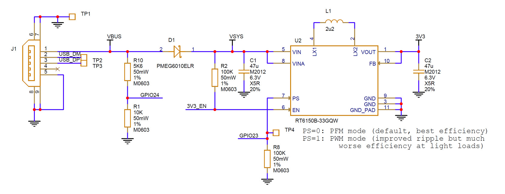
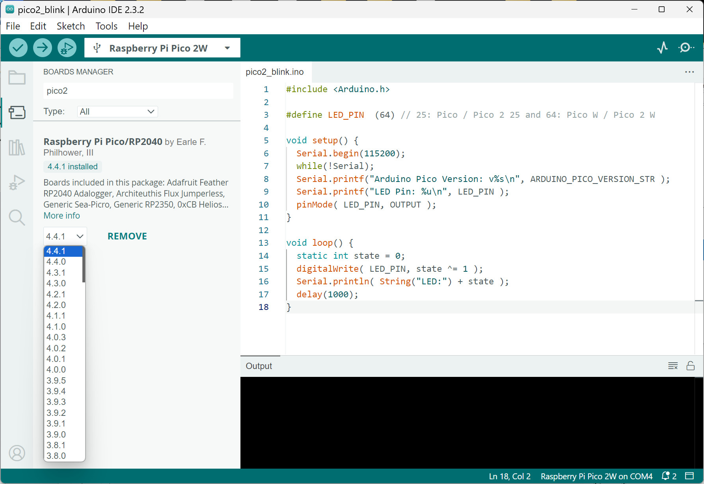
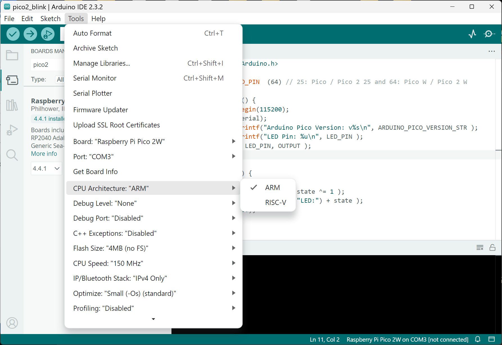
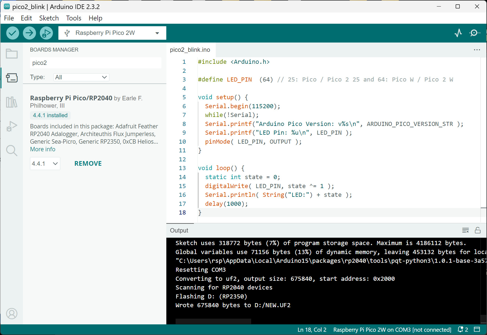
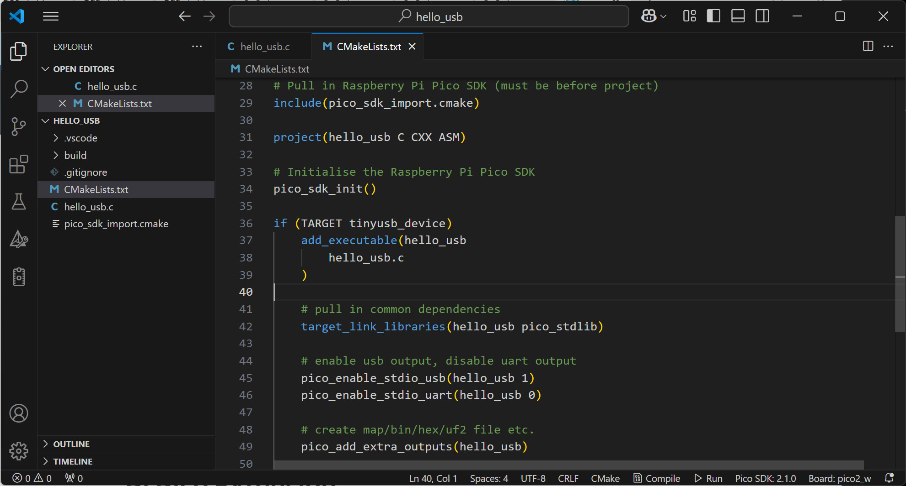

แนะนำชิปไมโครคอนโทรลเลอร์ Raspberry Pi RP253x SoC#
▷ แนะนำชิป RP253x และบอร์ด Pico 2#
ในเดือนสิงหาคม ค.ศ. 2024 ได้มีการเปิดตัวชิปไมโครคอนโทรลเลอร์ RP2350 ซึ่งจัดอยู่ในซีรีย์ RP235x ของบริษัท Raspberry Pi Ltd. ในเมือง Cambridge (UK) และถือว่าเป็นรุ่นที่สองถัดจากชิปรุ่น RP2040 ที่ได้มีการเปิดเผยครั้งแรกในเดือนมกราคม ค.ศ. 2021
นอกจากนั้นแล้วทางบริษัทยังได้เปิดตัวบอร์ดไมโครคอนโทรลเลอร์ที่มีชื่อว่า Raspberry Pi Pico 2 ที่ใช้ชิปรุ่น RP2350 บอร์ด Pico 2 (RP2350) มีขนาดของบอร์ดและขาตรงกับบอร์ด Pico (RP2040) แต่ยังคงมีการเลือกใช้คอนเนกเตอร์ Micro USB (ไม่ได้เปลี่ยนเป็น Type-C) สำหรับการจ่ายไฟเลี้ยง และเชื่อมต่อกับคอมพิวเตอร์ของผู้ใช้ และยังไม่มีการเพิ่มปุ่มกดรีเซตที่ขา RUN
บอร์ด Pico 2 ยังไม่มีโมดูล WiFi/BLE แต่บอร์ดรุ่น Pico 2 W มีการใช้งานโมดูล Infineon 43439 (2.4GHz 802.11n Wi-Fi and Bluetooth 5.2) เหมือนบอร์ด Pico W
ในเชิงเปรียบเทียบ RP2040 มีตัวประมวลผลเป็นซีพียูขนาด 32 บิต แบบ Dual-Core, 32-bit Arm Cortex M0+ ทำงานด้วยความถี่สูงสุด 150MHz (แต่ใช้ความถี่แบบ Overclock ได้อีก) ในขณะที่ RP235x ก็ยังคงเลือกใช้สถาปัตยกรรมแบบ Dual-Core แต่ใช้สถาปัตยกรรมของซีพียูรุ่นใหม่กว่า
ชิปในตระกูล RP235x ซึ่งผลิตโดยใช้เทคโนโลยีเซมิคอนดักเตอร์ขนาด 40 นาโนเมตร (โดยให้บริษัท IMEC ทำชิปต้นแบบ และบริษัท TSMC ผลิตจำนวนมาก) จำแนกออกไปเป็นตัวเลือกย่อยได้ดังนี้
-
RP2350A และ RP2350B (ไม่มีหน่วยความจำ Flash อยู่ภายในชิป) และมีรุ่นย่อยคือ A และ B แตกต่างกันที่ตัวถัง (IC Package) และ จำนวนขา GPIOs
- A: ใช้ตัวถังแบบ QFN60 (7x7mm^2, 30 GPIOs)
- B: ใช้ตัวถังแบบ QFN80 (10x10mm^2, 48 GPIOs)
-
RP2354A และ RP2354B เป็นรุ่นที่มีหน่วยความจำแบบ Flash ขนาด 2MB รวมอยู่ในชิปเดียวกัน (เป็นการออกแบบและผลิตชิปในรูปแบบที่เรียกว่า SiP: Stacked-in-Package)
หากพิจารณาพื้นที่ภายในชิปสำหรับการสร้างวงจรด้วยสารกึ่งตัวนำ หรือ Die Size ชิป RP2350 มีขนาด 5.3mm^2 เปรียบเทียบกับ 2mm^2 สำหรับชิป RP2040 (ใช้เทคโนโลยีการผลิต 40nm เหมือนกัน) ดังนั้นจึงมีขนาดของวงจรภายในที่ใหญ่กว่า
รหัสของชิป RP2354 A/B มีความหมายดังนี้
2: Number of CPU Cores3: Arm-Cortex M33 (default)5: On-chip SRAM = log2( 520KB / 16KB )4: On-chip Flash = log2( 2048KB / 128KB )
บอร์ด Pico 2 ใช้ชิป RP2350A และมีชิปหน่วยความจำแฟลชภายนอก (Quad-SPI flash) ขนาด 4MB
รูป: บอร์ด Pico 2 และ Pico 2 W
รูป: แผนผังแสดงตำแหน่งขาของบอร์ด Pico 2
รูป: แผนผังแสดงตำแหน่งขาของบอร์ด Pico 2 W
แรงดันไฟเลี้ยงสำหรับบอร์ด Pico 2 / Pico 2 W
- จุดอ้างอิง
VBUS- ตรงกับขา
VBUSของบอร์ด - ใช้รับแรงดันไฟเลี้ยง 5V ± 10% ซึ่งได้จากคอนเนกเตอร์ micro-USB
- ตรงกับขา
- จุดอ้างอิง
VSYS- ตรงกับขา
VSYSของบอร์ด - ได้รับแรงดันไฟฟ้าอินพุตมาจาก
VBUSต่อผ่านไดโอดแบบ Schottky - ใช้สำหรับแรงดันไฟเลี้ยงในช่วงได้ในช่วง 1.8V ~ 5.5V แล้วนำไปใช้กับวงจรสวิตชิง (SMPS)
- ตรงกับขา
วงจร Buck-Boost SMPS (RT6150) ใช้สำหรับสร้างแรงดันไฟเลี้ยง 3.3V (3V3) และวงจรนี้มีขา
3V3_EN ควบคุมการทำงานของวงจรดังกล่าว ขานี้ต่อผ่านตัวต้านทาน 100kΩ ไปยัง VSYS
ถ้าต่อขานี้ไปยัง GND จะปิดการจ่ายไฟเลี้ยงให้บอร์ด

รูป: วงจร Power Supply ของบอร์ด Pico 2
ขา GPIO ของบอร์ด Pico 2 ที่เกี่ยวข้องกับวงจร SMPS ได้แก่
GPIO24: ใช้สำหรับตรวจสอบระดับแรงดันไฟฟ้าVBUSโดยต่อผ่านวงจรแบ่งแรงดัน (Voltage Divider):GPIO23: ใช้สำหรับการเลือกโหมดการทำงานของ RT6150 (SMPS) โดยต่อกับขาPSPS=0: Pulse Frequency Modulation (PFM) mode (default) มีตัวต้านทาน 100kΩ pulldownPS=1: Pulse Width Modulation (PWM) mode
GPIO29: ใช้ในการวัดระดับแรงดันไฟฟ้าของVSYSโดยต่อกับ ADC ช่องอินพุตADC3
▷ ข้อมูลจำเพาะเกี่ยวกับชิป RP2350#
ลองมาศึกษาข้อมูลจำเพาะเกี่ยวกับชิป RP2350 ดังนี้
- มีสถาปัตยกรรมแบบ Symmetric dual-core, dual-architecture
- Dual-core: Core 0 & Core 1
- Dual-architecture: Arm Cortex-M33 & Hazard3 RISC-V (32-bit)
- RP2350 มีซีพียูดังนี้
- Arm Cortex-M33: 150MHz 3-stage pipeline, 4.09 CoreMark/MHz
- RISC-V Hazard3: 150MHz, 3-stage pipeline, 3.81 CoreMark/MHz
- ถ้าใช้ซีพียู Arm Cortex-M33 ก็สามารถใช้คำสั่งได้สำหรับ
single-precision floating-point arithmetic (
hard-fp) - ชิป RP2350 มีวงจร On-chip Switching Regulator อยู่ภายในชิป เพื่อสร้างแรงดันไฟเลี้ยง 1.1V สำหรับ Core Voltage จากแรงดันไฟเลี้ยง 3.3V
- ความถี่ในการประมวลผลของซีพียู: 48MHz ~ 150MHz (แต่สามารถใช้ความถี่สูงกว่ากำหนดได้ หรือ Overclock)
- มีหน่วยความจำ SRAM: 520KB (มากกว่า SRAM ของ RP2040 ซึ่งมีขนาด 264KB)
- มีหน่วยความจำแบบ ROM: 32KB ซึ่งภายในมีเฟิร์มแวร์สำหรับ UART & USB (UF2) Bootloaders
- มีหน่วยความจำแบบ OTP (anti-fuse, One-Time Programmable): 8KB
- ต้องใช้ชิปหน่วยความจำภานอกสำหรับ External Flash (Primary Flash) ขนาดสูงสุด 16MB
- เขียนอ่านข้อมูลด้วยบัส Serial SPI รองรับการเชื่อมต่อแบบ Dual SPI / Quad SPI (QSPI)
- สามารถต่อไอซี Secondary Serial Flash หรือหน่วยความจำ External Serial RAM (PSRAM) ได้อีก
- ถ้าใช้ชิป Arm Cortex-M33 ก็สามารถใช้งานฟังก์ชันของ Arm TrustZone เช่น
- Secure Boot ซึ่งช่วยให้การบูทระบบมีความปลอดภัย และป้องกันการอ่านหรือเขียนข้อมูลที่ไม่ปลอดภัย
- SHA-256 accelerator ซึ่งเป็นวงจรสำหรับการคำนวณ Secure Hash
- TRNG (true random number generator) ซึ่งเป็นวงจรสร้างเลขสุ่ม
- มีวงจรรอบข้างซีพียู (On-chip Peripherals) อย่างเช่น
- 2× UARTs
- 2× SPI controllers
- 2× I2C controllers
- 24× PWM channels
- 3× 12-bit ADC
- ขา GPIO ใช้กับแรงดันได้ในช่วง 1.8V ~ 3.3V (IO Voltage) แต่บอร์ด Pico 2 / Pico 2 W มีแรงดันไฟฟ้า IO voltage อยู่ที่ระดับ 3.3V
- รองรับการเชื่อมต่อด้วย USB 1.1 (Controller + PHY)
- มีวงจรที่เรียกว่า Programmable IO (PIO) blocks จำนวน 3 ชุด
PIO0~PIO2ในขณะที่ชิป RP2040 มี PIO เพียง 2 ชุด
ในมุมมองของการออกแบบสถาปัตยกรรมชิป มีประเด็นที่น่าสนใจดังนี้
- มีตัวประมวลผล 2 ชุด ทำงานได้เหมือนกันและขนานกันได้ (ในเอกสารของผู้ผลิต เรียกว่า CPU Sockets) แต่ละชุด มีซีพียู Arm Cortex-M33 CPU กับ RISV-C CPU อยู่ด้วยกัน (คู่กัน)
- ทีมงานออกแบบ ได้ใส่ RISC-V CPU Core (open ISA) มาเป็นตัวเลือกให้ลองใช้งานคู่กับ Arm-Cortex-M33 และลองเปรียบเทียบประสิทธิภาพ
- โดยปรกติ หลังจากรีเซตชิป และมีการเลือกรันโค้ด โดยใช้ Arm-Cortex-M33 ในแต่ละ CPU Socket ซีพียู RISC-V ก็จะไม่ทำงาน และอยู่ในโหมดการทำงานที่ถือว่าใช้พลังงานต่ำมาก ๆ
- การเลือกใช้ซีพียูอันไหนในแต่ละ CPU Socket จะมีการตรวจสอบหลังจากรีเซตระบบเท่านั้น และชุดคำสั่งของโปรแกรมในหน่วยความจำแฟลช ที่จะใช้จะต้องตรงกับสถาปัตยกรรมที่เลือกใช้ด้วย
▷ บอร์ดไมโครคอนโทรลเลอร์ที่ใช้ชิป RP2350#
นอกจากบอร์ด Pico 2 แล้วยังมีบริษัทอื่นที่ได้พัฒนาบอร์ดและใช้ชิป RP2350 อีกหลายบริษัท (Third-party RP2350-based boards) มีตัวอย่างเช่น
- Tiny2350 (Pimoroni Ltd.)
- Metro RP2350, Feather RP2350 (Adafruit Industries)
- W5500-EVB-Pico2, W6100-EVB-Pico2 (WIZnet Co. Ltd.)
- Pro Micro RP2350 (Sparkfun)
- Challenger+ RP2350 WiFi6/BLE5 (iLabs)
- XIAO RP2350 (Seeed Studio)
บอร์ด Sparkfun Pro Micro RP2350 มีการใส่ชิปหน่วยความจำ PSRAM มาให้ด้วย หรือบอร์ดของบางบริษัทที่มีการใส่โมดูล ESP32-C6 ช่วยทำให้ RP2350 สามารถสื่อสารไร้สายด้วย WiFi/BLE ได้ด้วย
▷ ซอฟต์แวร์สำหรับการเขียนโค้ด RP235x#
สำหรับการเขียนโค้ด C/C++ ผู้ใช้จะต้องติดตั้งและใช้งานซอฟต์แวร์ที่มีชื่อว่า Pico C/C++ SDK (v2.0.0+) (Online Doc) และสามารถใช้งานร่วมกับ VS Code IDE ได้ แนะนำให้ลองใช้งานร่วมกับ Pico VS Code Extension Pack รองรับการเขียนโค้ดและเลือกใช้ชุดคำสั่งได้สำหรับ Arm Cortex-M33 และ RISC-V
หากต้องการเขียนโค้ดด้วย Arduino Sketch ก็ให้เลือกใช้ Arduino Core for Raspberry Pi Pico (Community Edition) สำหรับ Arduino IDE Software แต่จะต้องใช้สำหรับเวอร์ชัน v4.0.0 (หรือสูงกว่า) เพื่อรองรับการใช้งานชิป RP2350 และตั้งแต่เวอร์ชัน v4.3.0 รองรับการใช้งาน WiFi / BLE สำหรับบอร์ด Pico 2 W
การเขียนโค้ดด้วยภาษา MicroPython ก็ทำได้เช่นกัน ผู้ใช้สามารถดาวน์โหลดไฟล์เฟิร์มแวร์ ซึ่งเป็นไฟล์ .UF2 มาติดตั้งใช้งานสำหรับบอร์ด Pico 2
ในขณะที่เขียนบทความนี้ ตัวเลือกในการเขียนโปรแกรมสำหรับชิป RP2040 / RP2530 มีดังนี้
- C/C++:
- Python:
- JavaScript:
- Golang:
▷ การติดตั้งและใช้งาน Arduino Core#
ถัดไปเป็นตัวอย่างการเขียนโค้ด Arduino Sketch โดยใช้ Arduino Core for Raspberry Pi Pico และทดลองใช้กับบอร์ด Pico 2 / Pico 2 W
รูป: การเพิ่มรายการ URL ใน Arduino IDE - Boards Manager
https://github.com/earlephilhower/arduino-pico/releases/download/global/package_rp2040_index.json

รูป: การติดตั้ง Arduino Core for Raspberry Pi Pico (ทดลองใช้เวอร์ชัน 4.4.1) ใน Arduino IDE - Boards Manager
ถัดไปเป็นโค้ดตัวอย่าง Arduino Sketch ทำให้ LED บนบอร์ด Pico 2 / Pico 2 W กระพริบด้วยอัตราคงที่ และส่งข้อความออกมาผ่านทาง USB CDC (Serial)
ข้อสังเกต: บอร์ด Pico 2 W มีโมดูล Wi-Fi / BLE และขาที่ต่อกับวงจร LED บนบอร์ด ไม่ใช่ขา GP25
#include <Arduino.h>
#define LED_PIN (64) // 25: Pico / Pico 2 25 and 64: Pico W / Pico 2 W
void setup() {
Serial.begin(115200);
while(!Serial);
Serial.printf("Arduino Pico Version: v%s\n", ARDUINO_PICO_VERSION_STR );
Serial.printf("LED Pin: %u\n", LED_PIN );
pinMode( LED_PIN, OUTPUT );
}
void loop() {
static int state = 0;
digitalWrite( LED_PIN, state ^= 1 );
Serial.println( String("LED:") + state );
delay(1000);
}
หากเริ่มต้นใช้งานครั้งแรก จะต้องทำให้บอร์ด Pico 2 / Pico 2 W เข้าสู่โหมด Bootloader
โดยการกดปุ่ม BOOTSEL ค้างไว้ แล้วเชื่อมต่อกับพอร์ต USB ของคอมพิวเตอร์ จากนั้นจะมองเห็น
Flash Drive ที่มีชื่อว่า RP2350
รูป: การเลือกพอร์ตสำหรับอัปโหลด โดยใช้วิธี UF2 Board

รูป: การเลือกซีพียูที่จะใช้งานระหว่าง ARM Cortex-M33 กับ RISC-V
เมื่อทำขั้นตอน Build และ Upload ไปยังบอร์ด Pico 2 ได้แล้ว จะเห็นว่า LED บนบอร์ดจะกระพริบ และมองเห็นว่า มีพอร์ตอนุกรม (Serial) แทนที่พอร์ต UF2

รูป: การอัปโหลดเฟิร์มแวร์ไปยังบอร์ด Pico 2 W ได้สำเร็จ โดยใช้วิธี UF2
รูป: การเลือกพอร์ตอนุกรม (Serial Port) เพื่อเชื่อมต่อกับบอร์ด Pico 2 และรับข้อความจากบอร์ด โดยเปิดใช้งาน Arduino Serial Monitor
เมื่อมองเห็นพอร์ตอนุกรมของบอร์ด Pico 2 แล้ว การอัปโหลดเฟิร์มแวร์ในครั้งถัดไป ก็ไม่จำเป็นต้องใช้วิธี UF2 แต่ใช้ช่องทางพอร์ตอนุกรม (USB CDC) แทน ทำให้สะดวกในการฝึกเขียนโปรแกรม
โค้ดตัวอย่างถัดไป สาธิตการแสดงข้อมูลเกี่ยวกับฮาร์ดแวร์ เช่น ความถี่ของซีพียู ความจุของหน่วยความจำ การใช้หน่วยความจำในขณะที่โปรแกรมทำงาน เป็นต้น
#include <Arduino.h>
#define LED_PIN LED_BUILTIN
void setup() {
Serial.begin(115200);
while (!Serial) { } // Wait until the USB-CDC is ready
pinMode( LED_PIN, OUTPUT );
Serial.println( "Raspberry Pi Pico 2 / Pico 2 W");
Serial.printf("Chip ID: %s\r\n", rp2040.getChipID() );
Serial.printf("CPU Speed: %d MHz\r\n", (int)(rp2040.f_cpu()/1e6) );
Serial.printf("CPU Core ID: %d\r\n", rp2040.cpuid() );
Serial.printf(" Total Heap: %d\r\n", rp2040.getTotalHeap() );
Serial.printf(" Free Heap: %d\r\n", rp2040.getFreeHeap() );
Serial.printf(" Used Heap: %d\r\n", rp2040.getUsedHeap() );
Serial.printf(" Free Stack: %d\r\n", rp2040.getFreeStack() );
#if defined(RP2350_PSRAM_CS)
Serial.printf("Total PSRAM: %d\r\n", rp2040.getTotalPSRAMHeap() );
#endif
}
void loop() {
digitalWrite( LED_PIN, !digitalRead(LED_PIN) );
delay(100);
}
รูป: ตัวอย่างข้อความเอาต์พุต
ตัวอย่างถัดไปสาธิตการลองใช้งานโมดูล WiFi บนบอร์ด Pico 2 W
#include <Arduino.h>
#include <WiFi.h>
#include <time.h>
#include "Secrets.h"
const time_t TZ_OFFSET_SEC = 7*60*60; // GMT+7
void setup() {
Serial.begin(115200);
while (!Serial) {} // Wait until the USB-CDC is ready...
Serial.println("Raspberry Pi Pico 2 W");
Serial.println("Connecting to Wi-Fi network...");
WiFi.begin(WIFI_SSID, WIFI_PASS); // Connect to Wi-Fi
while (WiFi.status() != WL_CONNECTED) { // Wait for WiFi connection
delay(500);
Serial.print(".");
}
Serial.println("\nWi-Fi connected!");
Serial.print("IP Address: ");
Serial.println(WiFi.localIP()); // Show the IP address
if (WiFi.ping("8.8.8.8") >= 0) {
Serial.println("Ping successful!");
} else {
Serial.println("Ping failed!");
}
NTP.begin("th.pool.ntp.org", "time.nist.gov");
Serial.println("Waiting for NTP time sync....");
while (1) {
time_t now = time(nullptr);
if (now > 3600) {
break;
}
delay(100);
}
}
// see: https://arduino-pico.readthedocs.io/en/latest/wifintp.html
void loop() {
showLocalTime();
delay(1000);
}
void showLocalTime() {
struct tm timeinfo;
time_t now = time(nullptr);
now += TZ_OFFSET_SEC;
gmtime_r(&now, &timeinfo);
Serial.print("Current time: ");
Serial.print(asctime(&timeinfo));
}
ในไฟล์ Secrets.h จะต้องมีการตั้งค่าสำหรับการเชื่อมต่อ WiFi ซึ่งจะต้องระบุชื่อและรหัสผ่านตามลำดับ
(WIFI_SSID และ WIFI_PASS)
#ifndef SECRETS_H
#define SECRETS_H
const char* WIFI_SSID = "YOUR_WIFI_SSID";
const char* WIFI_PASS = "YOUR_WIFI_PASSWORD";
#endif
รูป: ตัวอย่างข้อความเอาต์พุต
▷ การเขียนโค้ดด้วย VS Code IDE + Raspberry Pi Pico Extension#
ขั้นตอนแรกให้เปิดใช้งาน VS Code IDE และติดตั้ง Raspberry Pi Pico Extension ตามลำดับ ซึ่งรองรับการเขียนโค้ดด้วยภาษา C/C++ โดยใช้ Pico C/C++ SDK และตัวเลือกหนึ่งคือ MicroPython
จากนั้นจึงสร้างโปรเจกต์ใหม่ โดยเลือกวิธีสร้างโปรเจกต์จากตัวอย่างที่มีมาพร้อมกับ Pico C/C++ SDK
เช่น ลองใช้ hello_usb ซึ่งเป็นการทดลองส่งข้อความผ่านทาง USB-CDC / Serial ของบอร์ด Pico 2 W
รูป: การตั้งติด Raspberry Pi Pico Extension ใน VS Code IDE
รูป: การสร้างโปรเจกต์ใหม่ โดยเลือก 'New Project From Example'
รูป: การกำหนดค่าสำหรับโปรเจกต์ใหม่ เช่น การตั้งชื่อโปรเจกต์ และการเลือกบอร์ด Pico 2 W
รูป: การทำขั้นตอน Build Project

รูป: ตัวอย่างไฟล์ CMakeLists.txt ของโปรเจกต์
รูป: ตัวอย่างการรับข้อความจากบอร์ด Pico 2 W โดยใช้ Serial Monitor
โค้ดตัวอย่างนี้ สาธิตการทำให้ LED บนบอร์ด Pico 2 / Pico 2 W กระพริบ
#include <stdio.h>
#include "pico/stdlib.h"
#include <hardware/gpio.h>
// Pico W devices use a GPIO on the WIFI chip for the LED.
// For Pico W, CYW43_WL_GPIO_LED_PIN is defined.
#ifdef CYW43_WL_GPIO_LED_PIN
#include "pico/cyw43_arch.h"
#endif
#ifndef LED_DELAY_MS
#define LED_DELAY_MS 500
#endif
// Perform initialisation
int pico_led_init(void) {
#if defined(PICO_DEFAULT_LED_PIN)
gpio_init(PICO_DEFAULT_LED_PIN);
gpio_set_dir(PICO_DEFAULT_LED_PIN, GPIO_OUT);
return PICO_OK;
#elif defined(CYW43_WL_GPIO_LED_PIN)
return cyw43_arch_init();
#endif
}
void pico_set_led(bool value) { // turn on or off the LED
#if defined(PICO_DEFAULT_LED_PIN)
gpio_put(PICO_DEFAULT_LED_PIN, value);
#elif defined(CYW43_WL_GPIO_LED_PIN)
cyw43_arch_gpio_put(CYW43_WL_GPIO_LED_PIN, value);
#endif
}
bool pico_get_led() {
#if defined(PICO_DEFAULT_LED_PIN)
return gpio_get(PICO_DEFAULT_LED_PIN);
#elif defined(CYW43_WL_GPIO_LED_PIN)
return cyw43_arch_gpio_get(CYW43_WL_GPIO_LED_PIN);
#endif
}
int main() {
stdio_init_all();
hard_assert(pico_led_init() == PICO_OK);
while (true) {
bool value = !pico_get_led();
printf( "LED: %d\n", value );
pico_set_led( value );
sleep_ms( LED_DELAY_MS );
}
}
ตัวอย่างไฟล์ CMakeLists.txt สำหรับการใช้งานกับบอร์ด Pico 2 W สังเกตว่า มีการเพิ่มชื่อ
pico_cyw43_arch_none ในส่วนที่เรียกว่า target_link_libraries(...)
cmake_minimum_required(VERSION 3.13)
set(CMAKE_C_STANDARD 11)
set(CMAKE_CXX_STANDARD 17)
set(CMAKE_EXPORT_COMPILE_COMMANDS ON)
if(WIN32)
set(USERHOME $ENV{USERPROFILE})
else()
set(USERHOME $ENV{HOME})
endif()
set(sdkVersion 2.1.0)
set(toolchainVersion 13_3_Rel1)
set(picotoolVersion 2.1.0)
set(picoVscode ${USERHOME}/.pico-sdk/cmake/pico-vscode.cmake)
if (EXISTS ${picoVscode})
include(${picoVscode})
endif()
set(PICO_BOARD pico2_w CACHE STRING "Board type")
# Pull in Raspberry Pi Pico SDK (must be before project)
include(pico_sdk_import.cmake)
project(hello_usb C CXX ASM)
# Initialise the Raspberry Pi Pico SDK
pico_sdk_init()
if (TARGET tinyusb_device)
add_executable(hello_usb
hello_usb.c
)
# pull in common dependencies
target_link_libraries(hello_usb pico_stdlib pico_cyw43_arch_none)
# enable usb output, disable uart output
pico_enable_stdio_usb(hello_usb 1)
pico_enable_stdio_uart(hello_usb 0)
# create map/bin/hex/uf2 file etc.
pico_add_extra_outputs(hello_usb)
# add url via pico_set_program_url
elseif(PICO_ON_DEVICE)
message("TinyUSB submodule is not initialized in the SDK")
endif()
▷ แหล่งจ่ายไฟเลี้ยงสำหรับ Pico 2 / Pico 2 W#
โดยปรกติแล้ว บอร์ด Pico 2 W ได้รับแรงดันไฟเลี้ยงจากคอนเนกเตอร์ Micro USB หรือจากขา VBUS
แต่ผู้ใช้สามารถใช้แรงดันไฟเลี้ยงจากภายนอกได้ โดยต่อเข้าที่ขา VSYS
รูป: การใช้แหล่งจ่ายไฟเลี้ยงภายนอกโดยนำมาต่อเข้าที่ขา VSYS ผ่านไดโอด Schottky
หรืออีกทางเลือกหนึ่งคือ การใช้ไอซีทรานซิสเตอร์แบบ P-MOSFET มาต่อเพิ่ม
ในกรณีที่ใช้ทรานซิสเตอร์แบบ P-MOSFET สำหรับแหล่งจ่ายภายนอก (ไม่เกิน 5.5V)
หากมีแรงดันไฟเลี้ยงที่ขา VBUS ประมาณ 5V จะทำให้ P-MOSFET ไม่ทำงาน
แต่ถ้า VBUS=0V จะทำให้ และ P-MOSFET ทำงานและจ่ายไฟเลี้ยงไปยังขา VSYS
▷ กล่าวสรุป#
ชิป RP253x เป็นชิปไมโครคอนโทรลเลอร์ที่มีราคาไม่แพง และมีประสิทธิภาพ หรือความสามารถในการประมวลผลสูงกว่าชิป RP2040 รุ่นก่อน เช่น หากใช้คำสั่งสำหรับคำนวณเลขทศนิยม หรือ Floating-point ก็จะทำได้เร็วกว่า เนื่องจากมีวงจร FPU (Floating-point Unit) อยู่ภายในชิป และชิป RP253x ก็มีซีพียูภายใน 2 ชุด ทำงานร่วมกันได้ เป็นตัวอย่างการประมวลผลระดับฮาร์ดแวร์แบบขนานกัน (Parallel Processing)
แหล่งข้อมูลอ้างอิง
This work is licensed under a Creative Commons Attribution-ShareAlike 4.0 International License.
Created: 2024-09-07 | Last Updated: 2025-01-04